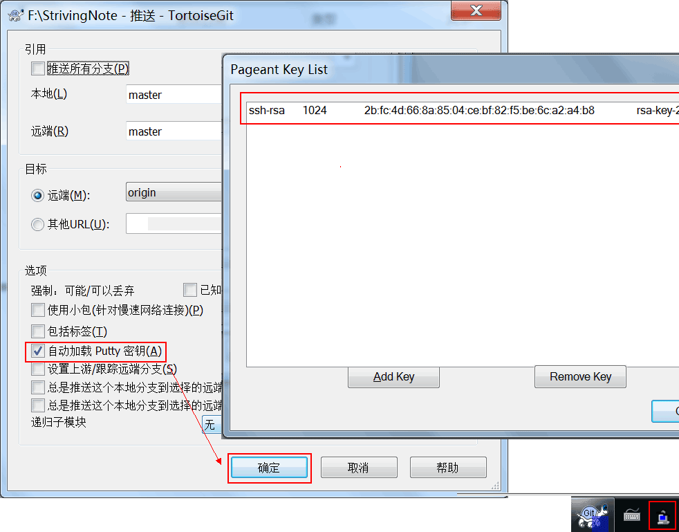

配置GIT和TortoiseGit的SSH密钥 TortoiseGit 使用扩展名为ppk的密钥，而不是ssh-keygen生成的rsa密钥。也就是说使用ssh-keygen -C "username@email.com" -t rsa产生的密钥在TortoiseGit中不能用。而基于github的开发必须要用到rsa密钥，因此需要用到TortoiseGit的putty key generator工具来生成既适用于github的rsa密钥也适用于TortoiseGit的ppk密钥，配置步骤如下 运行X:\Program Files\TortoiseGit\bin\puttygen程序，修改长度为1024(1024位的RSA密钥是最低安全要求，2048位的密钥极其安全)，点掉警告弹窗，点击“Generate”按钮 鼠标在上图的空白地方来回移动直到进度条完毕，就会自动生一个随机的key。如有需要用户使用时还要输入密码(不推荐)，可以为密钥设置对应的访问密码，就是修改上图中“Key passphrase”和“Confirm passphrase”的值 点击上图中的“Save private key”按钮,将生成的key保存为适用于TortoiseGit的私钥（如id_rsa.ppk） 打开TortoiseGit设置页面，配置相关参数如下：然后点击Git下的Remote菜单，添加一个origin远程仓库分之信息：Remote是为远程分之起个名字，URL是远程仓库地址，Putty是id_rsa.ppk文件路径。 保存公钥到服务器，将上图中PuTTYGen随机生成的key的内容(这就是适用于服务器的公钥PUB KEY)全选、复制，登录服务器，保存公钥到~/.ssh/authorized_keys文件里（如果用在github/gitlab则粘贴到账户的 SSH public key中） vi ~/.ssh/authorized_keys；i键进入编辑模式，右键粘贴 ESC退出编辑模式，:wq保存退出 修改文件权限：chmod 644 ~/.ssh/authorized_keys 修改配置文件，让SSH支持密钥登录： vi /etc/ssh/sshd_config i键进入编辑模式，将下列的#注释删除： #RSAAuthentication yes #PubkeyAuthentication yes #AuthorizedKeysFile %h/.ssh/authorized_keys 取消密码登录(可选):把PasswordAuthentication yes改为PasswordAuthentication no 重启ssh服务：service sshd restart 可以使用TortoiseGit正常工作了，可以试试pull，commit等功能，默认会自动加载Putty密钥。任务栏托盘会出现Pageant密钥管理器图标  解决错误：提示 network error software caused connection abort 网络错误软件造成连接中断：vi /etc/ssh/sshd_config，找到 TCPKeepAlive yes把前面的#去掉，找到ClientAliveInterval 参数去掉前面的#，找到ClientAliveInterval 60 把后面的0改成60 父主题： 使用TortoiseGit